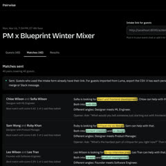
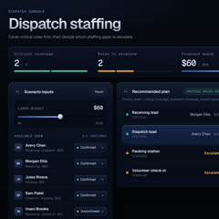

pairwise ↗
Tells everyone at a club event who to meet and why: two or three matches each, the words that connected them, and an opener.
Management Engineering student at the University of Waterloo, building at the intersection of product, design and code. Looking for product, design and strategy co-op roles.
SCROLL TO INSPECT
01 / 04 · Projects

Tells everyone at a club event who to meet and why: two or three matches each, the words that connected them, and an opener.
Find the subscriptions worth cutting. Drop in a bank CSV and it catches price hikes, double charges and converted trials, all in the browser.

A dispatch console for food-bank coordinators: when someone calls out, it re-plans critical roles within the labour budget.
A product film built entirely in code. The laptop behind this page comes apart, overheats and recovers in 9.6 s.
02 / 04 · Experience
Social Closet
Redesigned the app’s onboarding flow in Figma, added a progress indicator system and fixed UI inconsistencies across screens.
UW Blueprint
Runs culture and member experience for Waterloo’s tech-for-nonprofits club.
UW Product Management
Plans and runs events for the club. This is the work pairwise grew out of.
03 / 04 · Extracurriculars
DECA
Grew the chapter from ~30 to 80 members and qualified for ICDC.
Aquatikey · Junior Achievement
Ran a company making recycled-filament keychains modeled on Canadian marine species. Sold 100+ units, gave part of the revenue to charity and was nominated President of the Year.
ARCT level · 13 years
Won an international competition and now teaches at a music hall.
Awards
04 / 04 · Contact
Open to product, design and strategy co-op roles.